データ登録機能作成
テストデータは、JSON形式のデータを使用します。
テストデータはBigQueryに自動で取り込めるようにするため、Cloud Storageに配置されたファイルを
トリガーとして、プログラムでBigQueryに自動登録するようにします。
実行環境はCloud Functionsです。
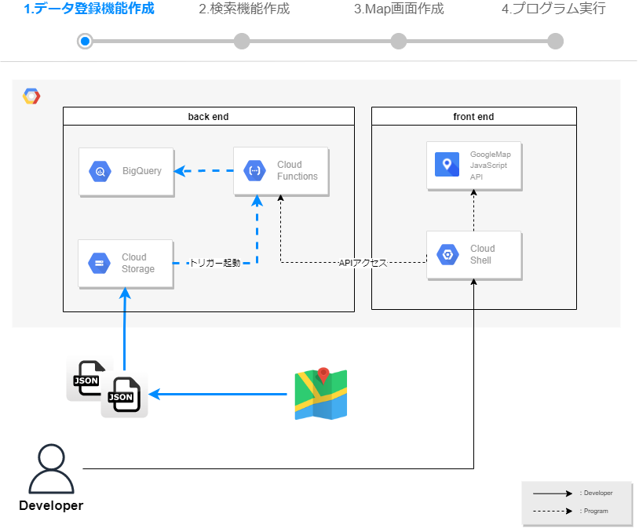
1. テストデータ登録機能を作成する
以下URLまたは、検索バーから「Cloud Functions」と検索し、Cloud Functionsを開きます。
https://console.cloud.google.com/functions/『関数の作成』を選択します。 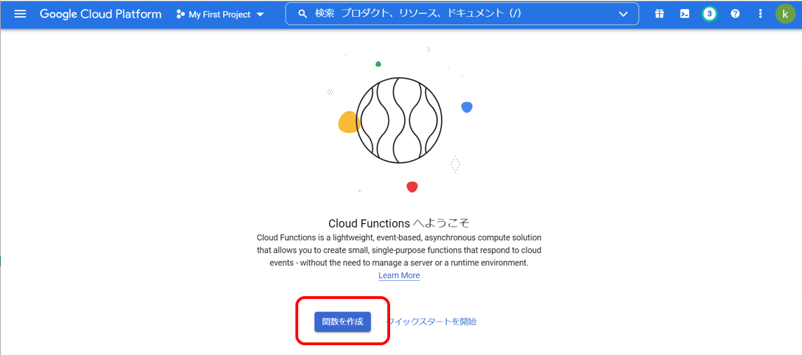
必要なAPIの有効化が求められるので、『有効にする』を選択します。 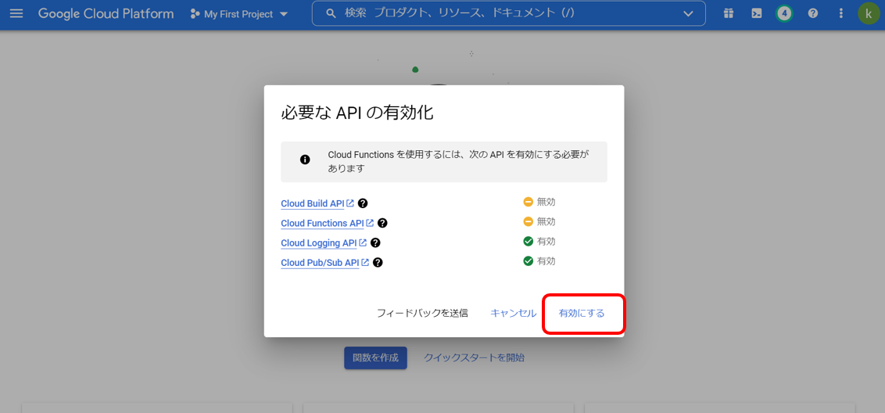
基本設定とトリガー設定を行い、『保存』を選択します。
バケットは指定のバケット名に書き換えてください。
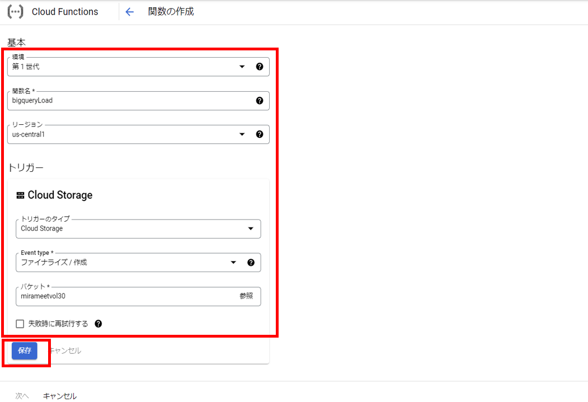『次へ』を選択します。
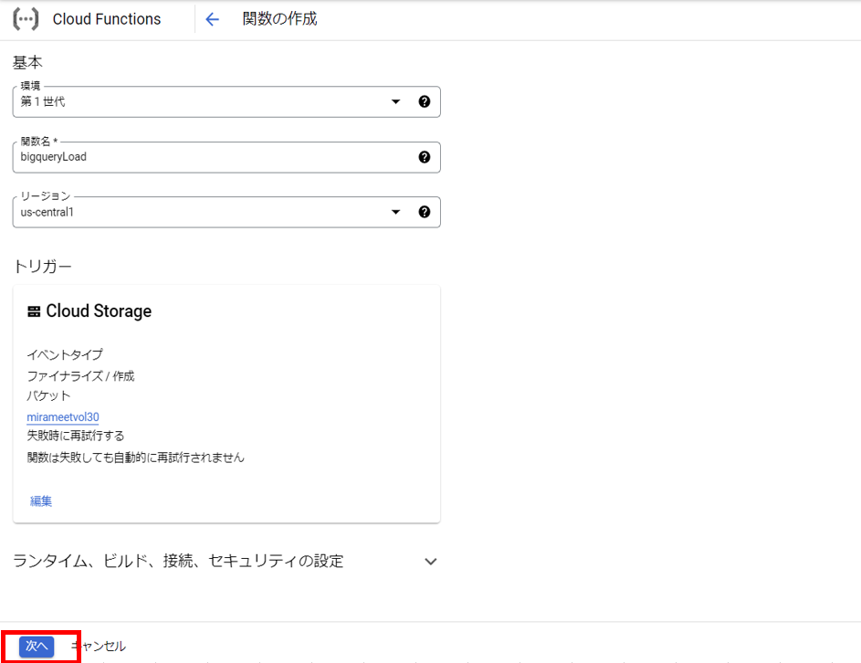ランタイムは"Node.js 16"を選択します。
index.jsを開き、以下コードに書き換えます。
【指定のバケット名】と【指定のデータセット名】は指定の値に書き換えます。
エントリポイントは、JavaScriptのプログラムに合わせ、"main"に変更します。このプログラムは、GCSに配置されたトリガー情報からファイル名を取得し、
指定のGCSバケットからBigQueryのテーブルにロードを行っています。
GCSとBigQueryのロケーションは同じである必要があります。
今回は"us-central1"で統一しています。// import const { BigQuery } = require('@google-cloud/bigquery'); const { Storage } = require('@google-cloud/storage'); const bigquery = new BigQuery(); const storage = new Storage(); exports.main = async (event, context) => { const gcsEvent = event // Cloud Storageのバケット名 const bucketName = 【指定のバケット名】 // Cloud Storageのファイル形式 const metadata = { sourceFormat: 'NEWLINE_DELIMITED_JSON', schema: { fields: [ {"name": "type","type": "STRING","mode": "NULLABLE"}, {"name": "features","type": "RECORD","mode": "REPEATED", "fields": [ {"name": "geometry","type": "RECORD","mode": "REPEATED", "fields": [ {"name": "coordinates","type": "NUMERIC","mode": "REPEATED", "fields": []}, {"name": "type","type": "STRING","mode": "NULLABLE"} ]}, {"name": "properties","type": "RECORD","mode": "REPEATED", "fields": [ {"name": "GoogleMapsURL","type": "STRING","mode": "NULLABLE"}, {"name": "Location","type": "RECORD","mode": "REPEATED", "fields": [ {"name": "Address","type": "STRING","mode": "NULLABLE"}, {"name": "BusinessName","type": "STRING","mode": "NULLABLE"}, {"name": "CountryCode","type": "STRING","mode": "NULLABLE"}, {"name": "GeoCoordinates","type": "RECORD","mode": "REPEATED", "fields": [ {"name": "Latitude","type": "STRING","mode": "NULLABLE"}, {"name": "Longitude","type": "STRING","mode": "NULLABLE"} ]} ]}, {"name": "Published","type": "STRING","mode": "NULLABLE"}, {"name": "Title","type": "STRING","mode": "NULLABLE"}, {"name": "Updated","type": "STRING","mode": "NULLABLE"} ]}, {"name": "type","type": "STRING","mode": "NULLABLE"} ]}],}, location: 'us-central1', } // BigQueryのデータセット名 const datasetId = 【指定のデータセット名】 // BigQueryのテーブル名 const tableId = 'TEST_TABLE' // BigQueryのロード実行 const [job] = await bigquery .dataset(datasetId) .table(tableId) .load(storage.bucket(bucketName).file(`${gcsEvent.name}`), metadata) };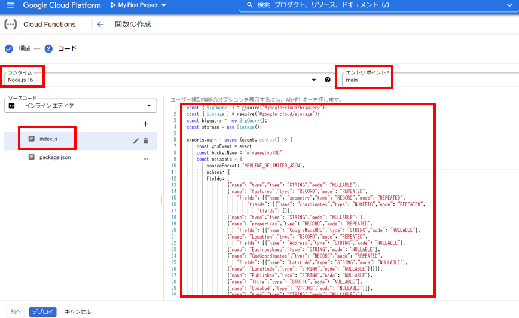
package.jsonを開き、dependenciesにgoogle-cloud/storageとgoogle-cloud/bigQueryを追記します。
{ "name": "sample-cloud-storage", "version": "0.0.1", "dependencies": { "@google-cloud/storage": "^5.8.1", "@google-cloud/bigquery": "^5.10.0" } }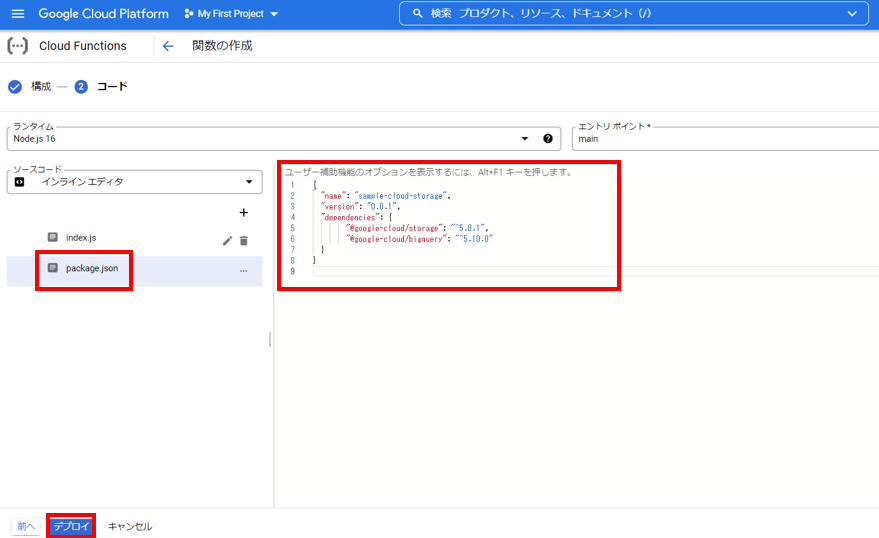
- 『デプロイ』を選択し、デプロイされるのを待ちます。
約１分ほどでデプロイが完了します。
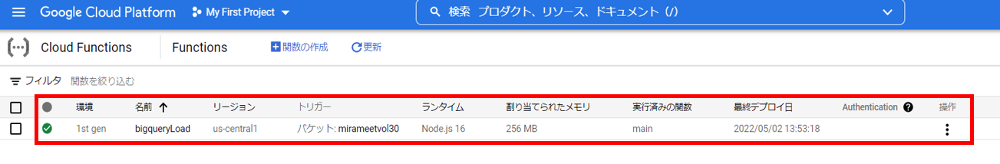
2. テストデータの作成
※以下手順はテストデータの作成手順ですが、
今回のハンズオンでは弊社側で用意したテストデータをお渡ししますので、そちらを利用ください。
このJSONデータには、以下２つの住所情報が入っています。
- スカイツリー
- 東京タワー
GoogleMapを開きます。
https://www.google.co.jp/mapsお気に入りの場所を選択し、『スター付き』を選択します。
複数スターを付けていきます。
Googleデータエクスポートを開きます。
https://takeout.google.com/settings/takeout
「選択をすべて解除」選択し、「マップ（マイプレイス）」のみ選択します。
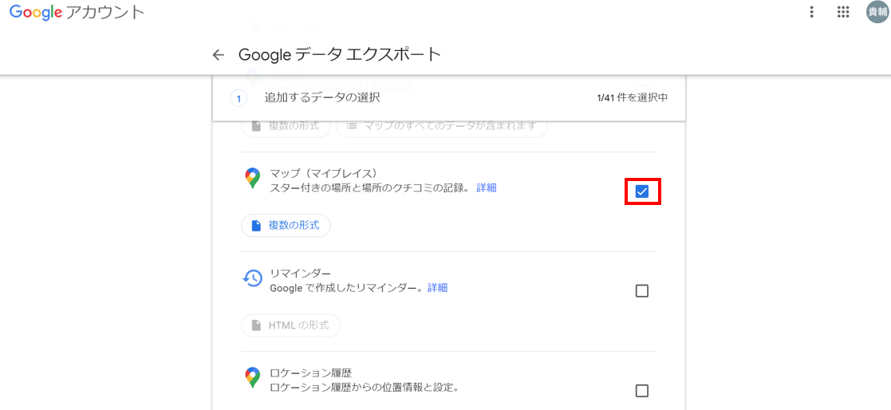「次のステップ」 ＞ 「エクスポート作成」をクリックします。
「ダウンロード」をクリックします。
ダウンロードしたZIPファイルを解凍し、JSON形式でスターを付けた情報が存在することを確認します。
ダウンロードしたJSONデータですがカラム名にスペースが混在しており、BigQueryとしては都合が悪いため、置換して削除します。
以下コマンドをGitBash等のTerminalで実行します。cd *JSONデータをダウンロードしたディレクトリ sed -z 's/\n//g' 保存した場所.json | sed -z 's/Google Maps URL/GoogleMapsURL/g' | sed -z 's/Business Name/BusinessName/g' | sed -z 's/Geo Coordinates/GeoCoordinates/g' | sed -z 's/Country Code/CountryCode/g' > test_data.json
3. テストデータを登録する
以下URLまたは、検索バーから「Cloud Stroage」と検索し、Cloud Stroageを開きます。
https://console.cloud.google.com/storage/browser先ほどのプログラムに書き加えたバケット名を選択します。
『ファイルをアップロード』を選択し、"test_data1.json"をアップロードします。
アップロード完了後、作成したCloud Functionsがアップロードされたファイルをトリガーに、BigQueryへ登録されます。
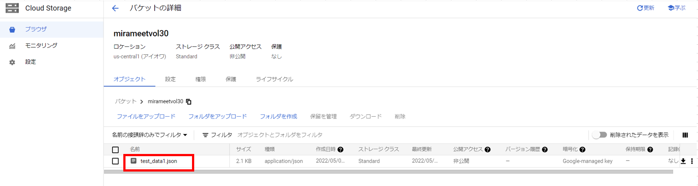以下URLまたは、検索バーから「BigQuery」と検索し、BigQueryを開きます。 https://console.cloud.google.com/bigquery
『クエリを新規作成』を選択し、
SQLエディターから、SELECT文を実行しテストデータが登録されているかを確認します。SELECT * FROM *指定のデータセット名.TEST_TABLE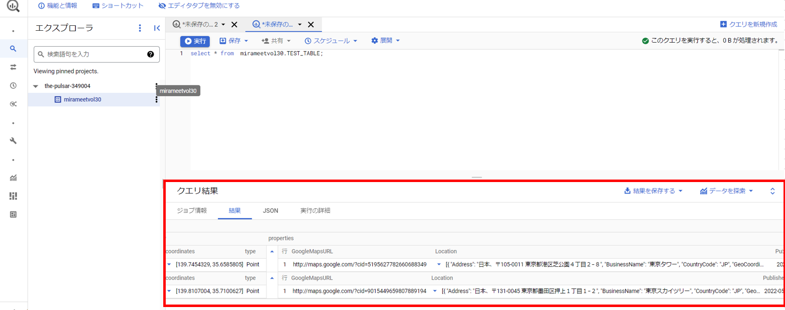